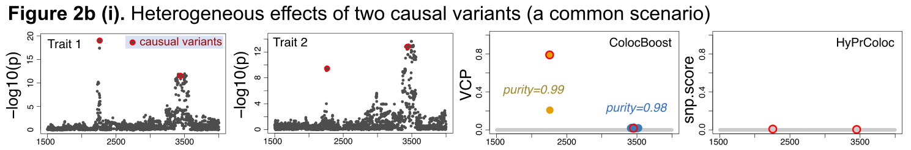
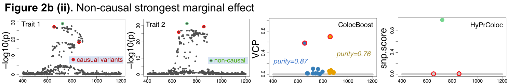
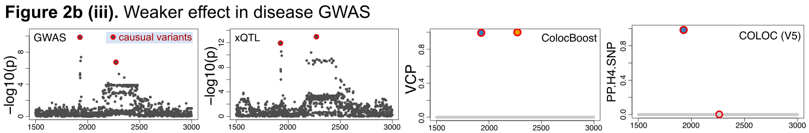

Advanced Colocalization Scenarios with ColocBoost
Source:vignettes/Advanced_Colocalization_Scenarios.Rmd
Advanced_Colocalization_Scenarios.RmdThis vignette uses representative simulation studies to illustrate two advanced colocalization scenarios addressed by ColocBoost:
- Multiple causal variants per trait: Regions containing multiple causal variants, beyond the one-causal-variant-per-trait assumption.
- Weaker effects in disease GWAS: Shared causal signals for which the disease trait contributes weaker association evidence than the accompanying molecular traits.
1. Multiple causal variants within a genomic region
To reduce the combinatorial hypothesis space, Bayesian multi-trait colocalization methods commonly assume that each trait has at most one causal variant within a genomic region (one-causal-variant-per-trait assumption). This assumption becomes increasingly restrictive as the number of phenotypes increases and more distinct signals and trait-sharing patterns must be resolved. Collapsing these signals into a single-signal representation can obscure event-specific sharing patterns, leading to missed or incorrectly localized colocalization events. This concern has also been emphasized and evaluated for pairwise colocalization using COLOC (V5) (Wallace, 2021, PLOS Genetics).
Scenario 1: Heterogeneous effects across traits
A common multi-signal scenario arises when multiple causal variants are shared across traits but have heterogeneous effects. Consider two traits influenced by two causal variants. Under the one-causal-variant-per-trait assumption, each trait is represented only by its strongest signal (Figure 2b(i)):
- Trait 1 is represented by causal variant 1, which has the strongest association with Trait 1.
- Trait 2 is represented by causal variant 2, which has the strongest association with Trait 2.
The resulting single-signal representations appear as two distinct trait-specific signals, leading to a false conclusion of no colocalization even though both causal variants are shared across the two traits. ColocBoost instead resolves the two shared signals as distinct colocalization events.

Scenario 2: Non-causal strongest marginal effect
Another multi-signal scenario occurs when a non-causal variant tags multiple causal variants through LD and consequently has the strongest marginal association. Distinguishing marginal association from causal attribution motivates multi-effect fine-mapping methods such as SuSiE (Wang et al., 2020, JRSS B).
Consider two traits sharing the same two causal variants. Under the one-causal-variant-per-trait assumption (Figure 2b(ii)):
- Trait 1 and Trait 2 are represented by the non-causal marginal lead (green dot), which has a stronger marginal association than either true causal variant (red dots).
The resulting single-signal representation incorrectly localizes the colocalized signal to a non-causal variant, whereas ColocBoost resolves the two shared causal signals as distinct colocalization events.

2. Colocalization with weaker effects in GWAS
In practice, it is often of interest to colocalize a disease GWAS with multiple molecular QTL traits to elucidate the functional basis of disease associations. An important technical aspect of GWAS-xQTL colocalization is that GWAS traits often have lower per-variant contributions to heritability than molecular xQTL traits.
Scenario 3: Weaker effects in disease GWAS
Consider a disease GWAS and an xQTL sharing the same two causal variants (Figure 2b(iii)):
- xQTL shows strong association evidence for both causal variants.
- Disease GWAS shows strong evidence for causal variant 1 but weaker evidence for causal variant 2.
COLOC (V5) identifies the event supported by the stronger GWAS signal but misses the second event with weaker GWAS evidence. As a two-stage approach that performs fine-mapping before colocalization, it may have reduced sensitivity to weaker signals with limited support in the initial single-trait analysis. ColocBoost identifies both shared signals using its disease-prioritized colocalization approach.

See Mixed Data-type and Disease Prioritized Colocalization for practical guidance on GWAS-xQTL analysis with the ColocBoost disease-prioritized mode.